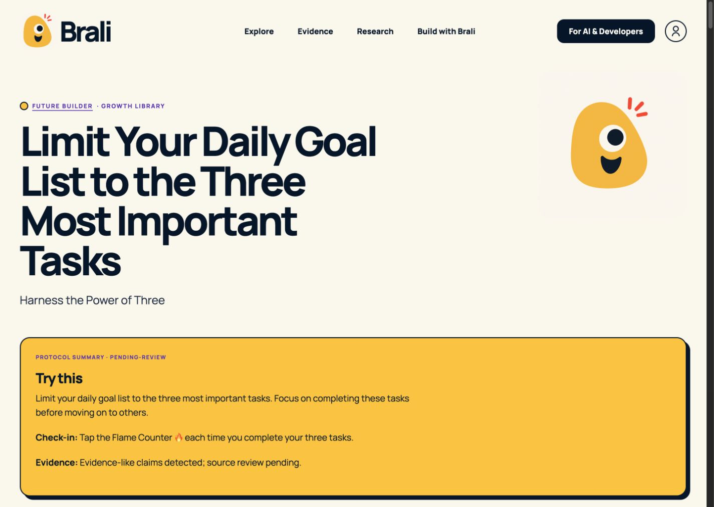
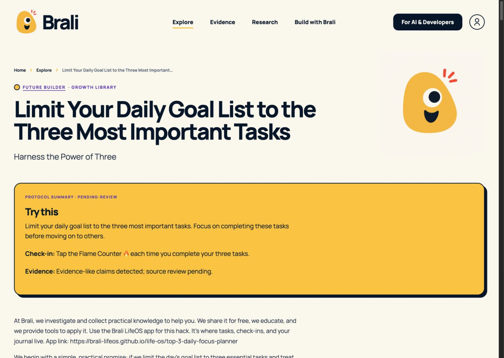
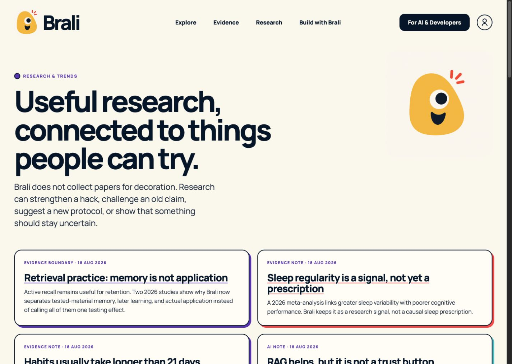
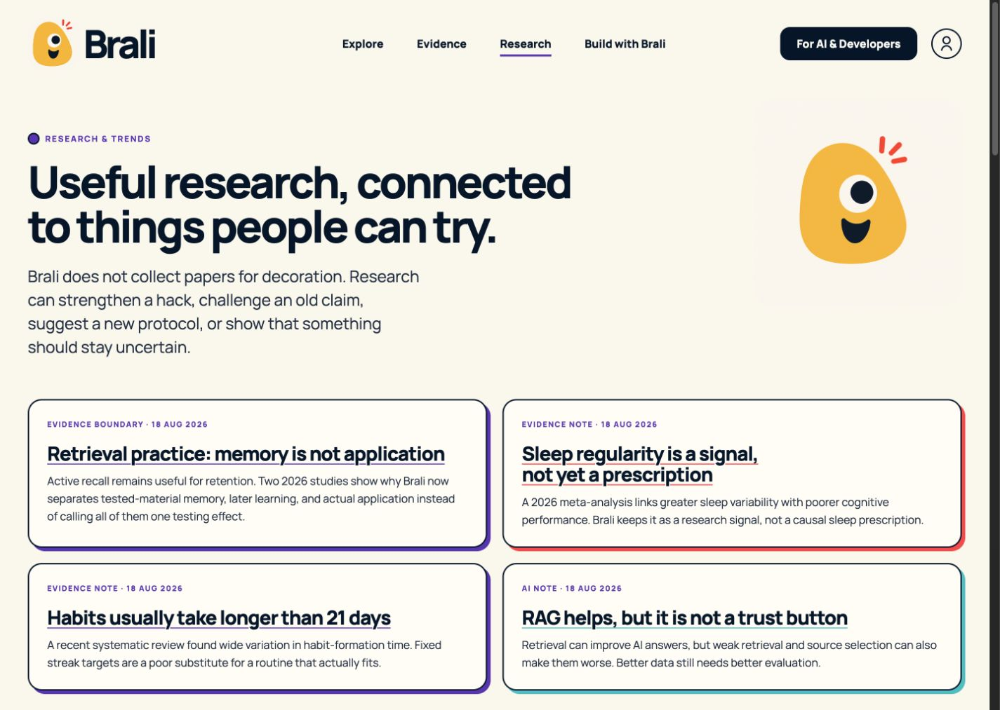
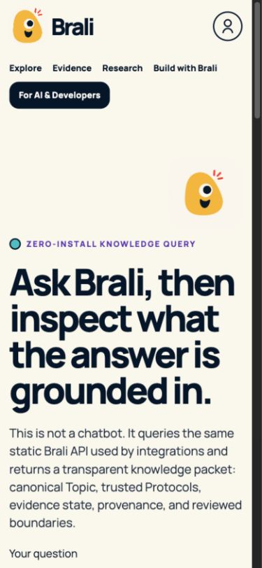
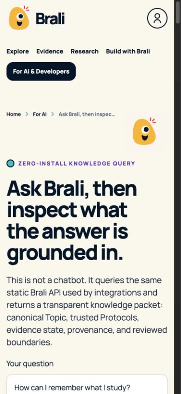

Brali site-wide readability pass
Current-run before/after comparison at matched viewports.
Protocol detail · before
Protocol detail · after
Research · before
Research · after
Query mobile · before
Query mobile · after